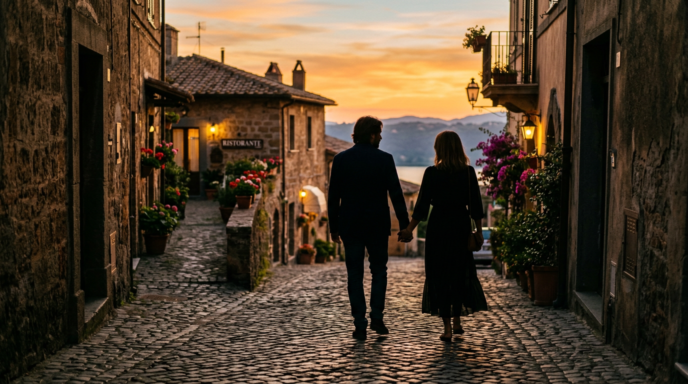
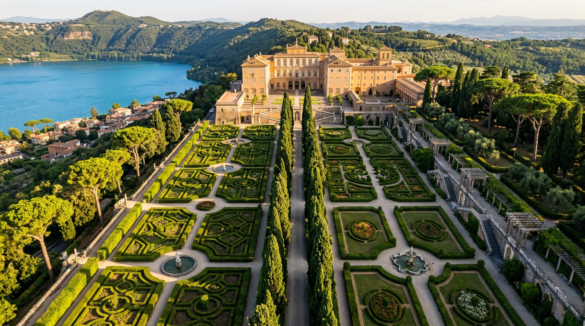
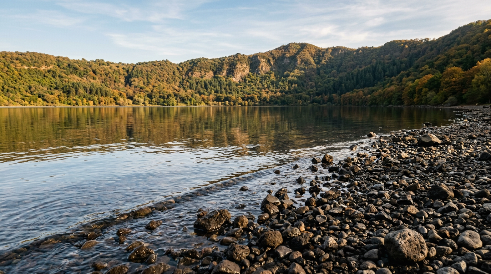

Storie, cronache, approfondimenti.

Le domeniche dell'Angelus
Come, dove e a che ora vedere Papa Leone XIV alla loggia del Palazzo Apostolico. Il calendario 2026 con orari, accessi e consigli pratici per il 15 agosto.

Il criptoportico di Domiziano
Trecento metri di tunnel imperiale scavati nel I secolo. Duemila anni dopo, la temperatura interna è ancora quindici gradi costanti. L'ingegneria climatica di un imperatore paranoico.

Un weekend a Castel Gandolfo
Due giorni per abitare il borgo dei Papi senza fretta. Sabato per il centro storico e il Palazzo Apostolico, domenica al lago. Itinerario passo-passo con orari, prezzi e coordinate verificate 2026.

Le Ville Pontificie — quattrocento anni
Dal 1626 di Urbano VIII al ritorno di Papa Leone XIV nel 2026. La storia della residenza estiva dei Papi, dai Barberini al Borgo Laudato Si'.

Il cratere che si è riempito d'acqua
600.000 anni di storia, 168 metri di profondità, un emissario romano del 398 a.C. ancora funzionante. Il lago vulcanico più profondo del Lazio, spiegato.

Le pesche di Castel Gandolfo
Novant'anni di sagra e un frutto simbolo. La 90ª edizione si è chiusa il 26 luglio 2026 — storia di una tradizione ininterrotta dal 1934.